Games104笔记-3-如何构建游戏世界
本文为课程Games104第三节课：How to Build a Game World的个人笔记。
游戏世界有什么？
课程里举了战地2042为例子，并且说这游戏很拉跨，嘻嘻嘻。
但如果以2042为例子，我们首先能想到的是很多动态交互物，例如玩家可以开坦克、开飞机，以及操控自己的小兵角色。当然像飞行中的导弹也一样。(下面图字打错了)
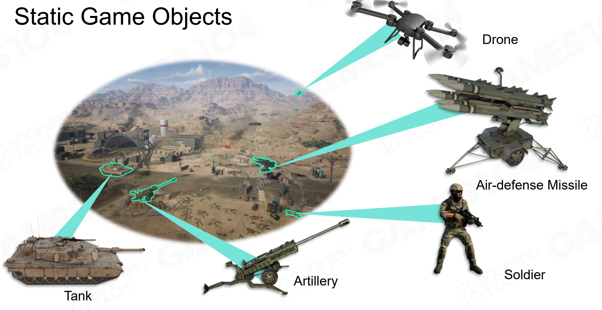
第二类物体就是静态物，这里包括瞭望塔、飞机的机棚、仓库、房屋、街道等。这些物体不可交互，但同样为游戏Gameplay玩法提供了重要的环境支持。
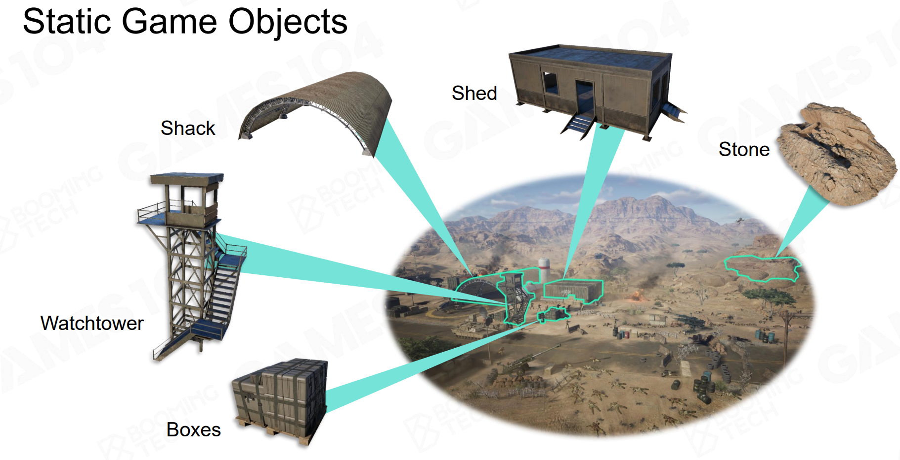
有一类不容易注意到的就是地形系统（UE里有专门的地形编辑工具），以及天空系统，植被等。
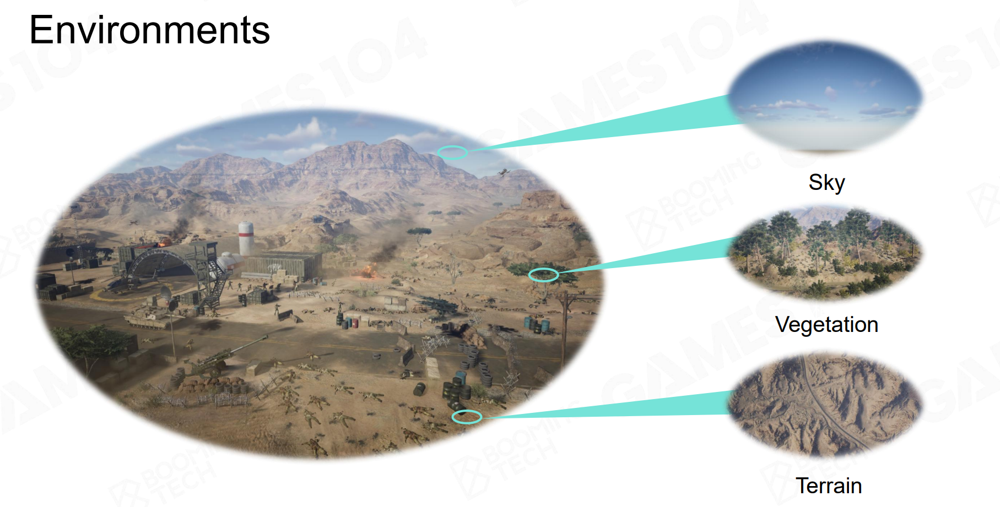
有了以上元素，我们可以得到看的见的游戏世界。但是我们的游戏还存在其它的物体，例如Trigger、空气墙等，它们虽然看不见，但是同样是玩法规则的一部分。
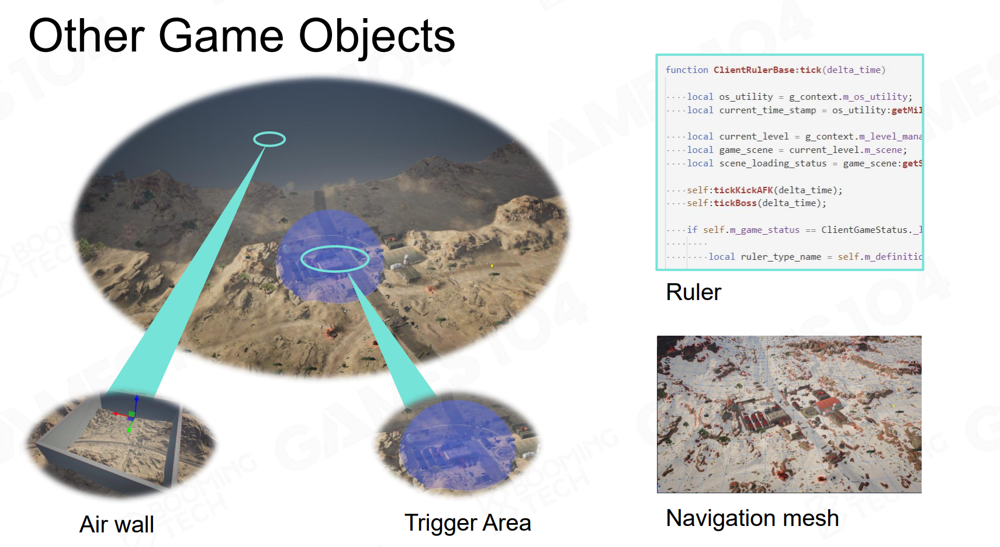
以上所有动静态物体统称为游戏对象Game Object(GO)。（注意：大地和天空系统是独立的）有了GO这个概念，我们该如何对某个GO进行操控呢？
Game Object
假设我们要实现一个能够自动巡逻的无人机，它需要具备什么？
第一点是属性（Property），例如几何外形、空间位置、动画状态以及血量等。
第二点是行为（Behavior），例如移动、巡逻，可以受一些AI算法的控制。
这种想法非常符合面向对象编程的思想：
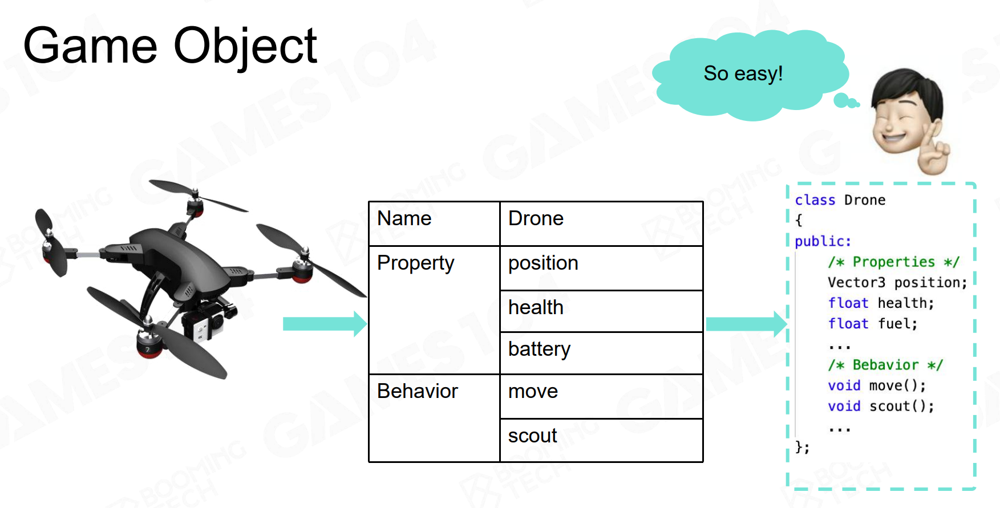
如果我们想在这个无人机上添加开火功能，则可以使用继承：
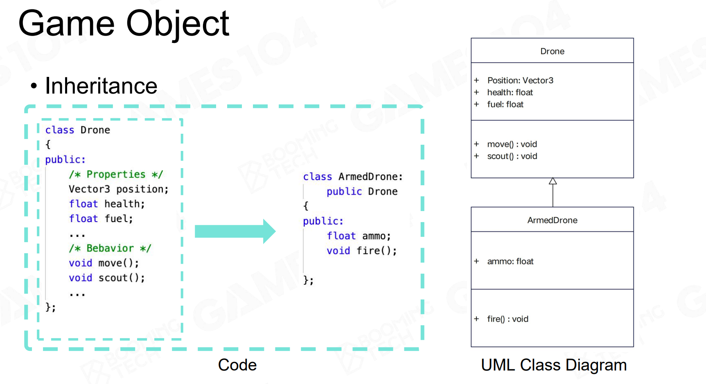
组合
继承有个缺陷，就是当游戏世界越来越复杂，有些东西并没有明显的父子关系。课程里举的例子是水陆两栖坦克，它的父亲是坦克还是船？
这时候组件化就派上用场了，例如一把枪有很多配件，我们可以直接拆分：
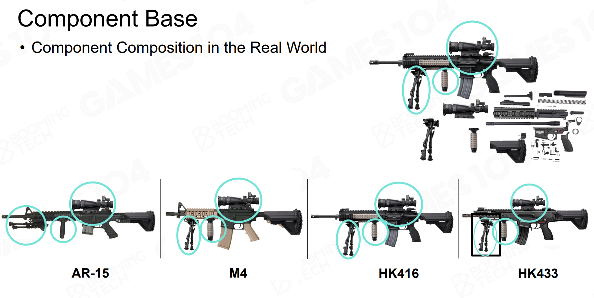
对于前面提到的无人机，我们也可以按照功能进行拆分，每一个功能都可以是一个组件：
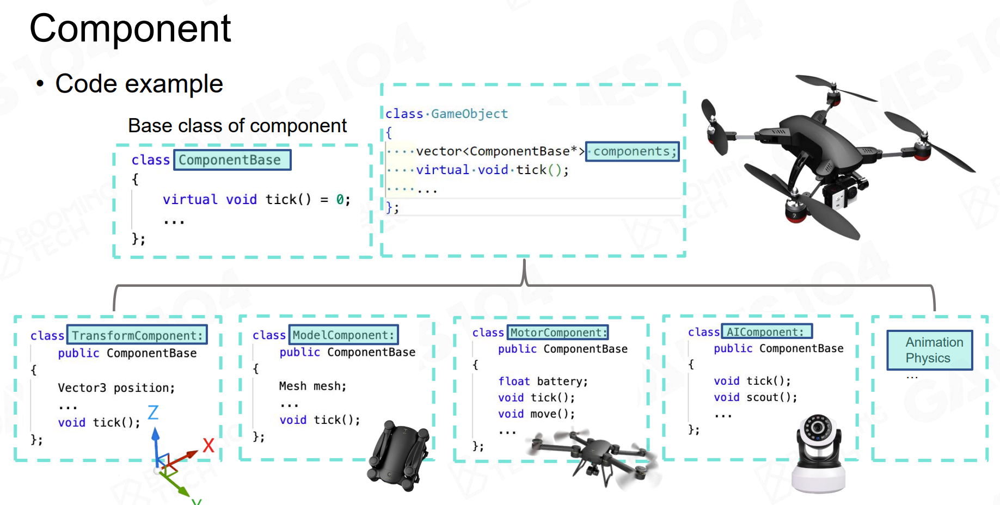
这里注意每个组件都会派生一个 Tick 函数。如果我们把AI组件进行修改，让它能够攻击，这时候只需要更改组件而无需继承，我们就能获得一个能够开火的无人机。
这种组件化的思想在现代引擎中运用广泛：
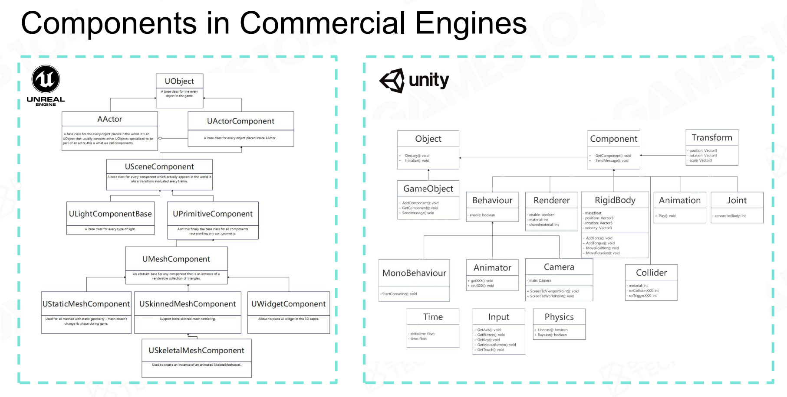
这里拿UE说明一下吧。UE里你在Actor的编辑界面能看到一列组件列表，里面所有组件都派生于 UActorComponent。这里的Actor可以理解为UE里的GO。
然后UE里有许多类型的组件。能够拥有父子关系的组件叫做 USceneComponent，在此基础上有我们可以设置Mesh的 UMeshComponent，包含静态的 UStaticMeshComponent 和骨骼的 USkeletalMeshComponent。还有一些不具有父子关系的组件，例如我们常说的CMC UCharacterMovementComponent，它里面实现了对于一个人形物体（事实上是一个胶囊组件）的移动逻辑与网络同步。
关于GO的Takeaways
- 在游戏世界中，每一个物体都是所谓的Game Object（GO）。
- 可以使用组件化的方式来描述GO。
如何让游戏世界动起来？
Tick
第二节课其实就介绍了 Tick 的概念，简单来说就是每一帧都会调用的函数。如果我们的坦克想要移动，那么我们应该Tick内部的移动组件，根据当前速度以及 DeltaTime 来更新位置。当然可能我在当前这一帧收到了用户输入，需要开火等等。
那么将游戏中所有的GO及其组件都Tick一遍，我们的游戏世界就运动起来了。
一种符合常规思维的方式是按照GO的顺序进行Tick：
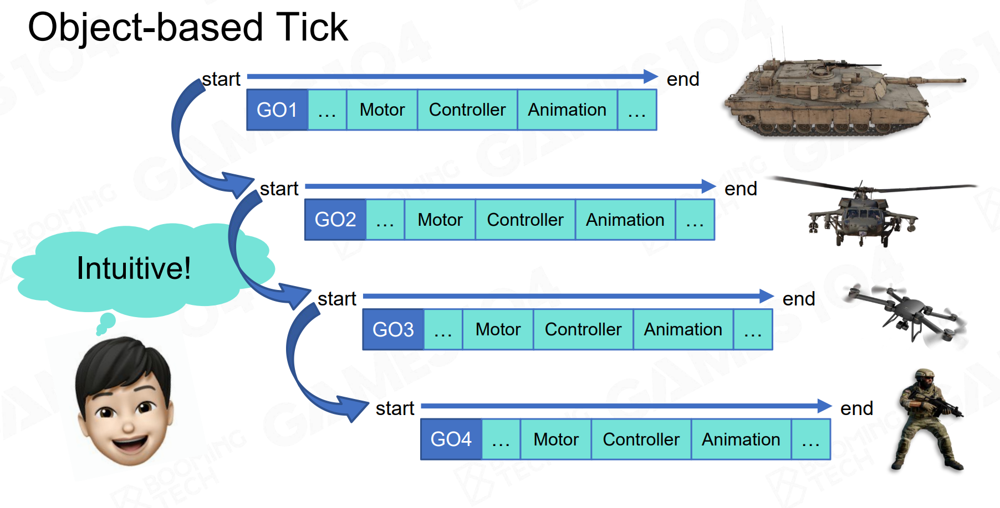
但是在现代游戏引擎中，一般是根据一个个系统对应的全部组件进行Tick：
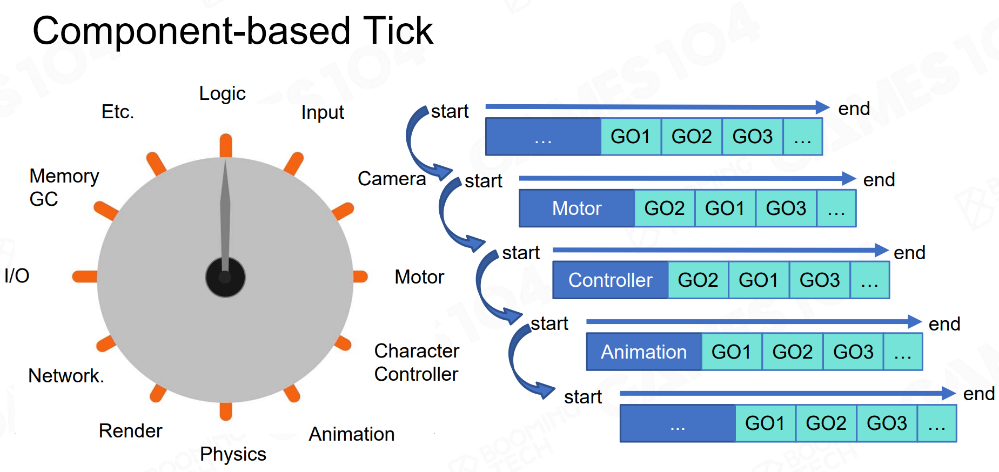
课程给出的解释是这种方式能够很好地并行化+它是缓存友好的。这我显然不理解。课程还举了KFC做汉堡的例子，我感觉不是很恰当。这个问题咱们就留在这里吧，说不定等后续讲到了ECS架构，我们能够对这个问题有深刻的理解。
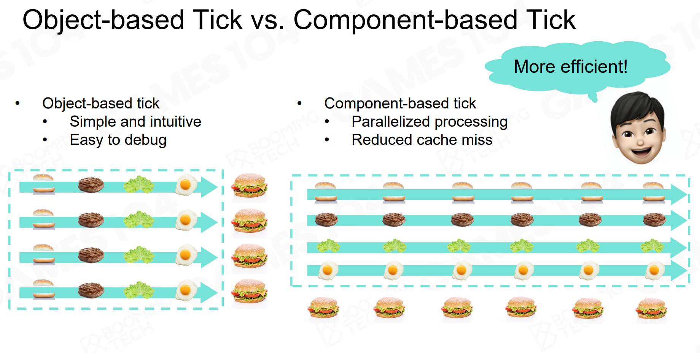
事件
当我们朝一个地方开炮，假设炮弹打到了一个物体，我们该如何处理炮弹爆炸的这么一个逻辑呢？
一种想法是Hard Code，就是根据物体类型做if-statement：
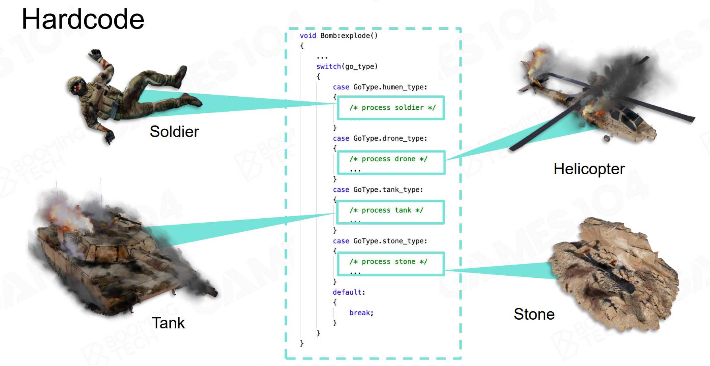
这种做法可扩展性不佳。于是游戏引擎现在有了很重要的一个机制：Event机制。
课程里举的一个很生动的例子，就是我们不要粗暴地“敲”人家的门，而是将当前爆炸的讯息作为一封“邮件”，等对方下一帧Tick的时候自己来处理这个讯息。
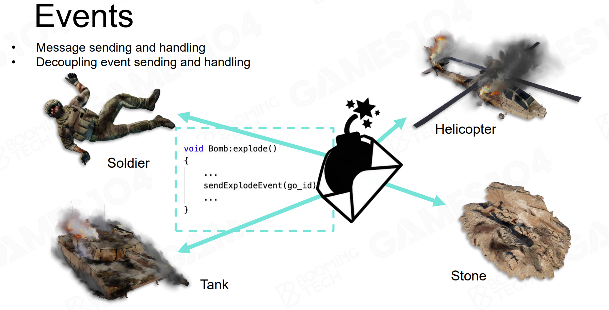
这种事件机制能够很有效地将炮弹和受攻击的物体之间解耦合。在UE里我记得这种机制叫做Delegate，类似于观察者模式。
场景管理
我们的场景可能有很多的物体。假设我们的炮弹炸了，我们需要对一定范围内的GO发布Event，这时候如果暴力for循环不太现实，因此需要做些优化。
一种简单的方式是对世界划分均匀格子，分而治之。
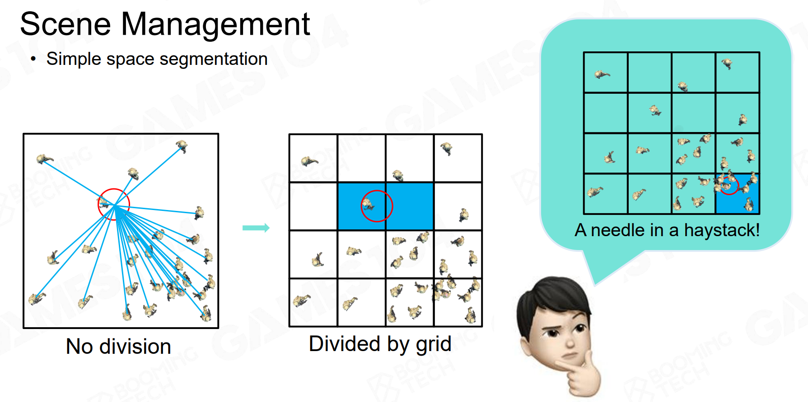
但是我们的游戏世界的GO事实上分布很不均匀。因此我们需要一些Hierarchy的层级结构来管理整个场景，例如四叉树，节点根据场景GO密度自适应分裂：
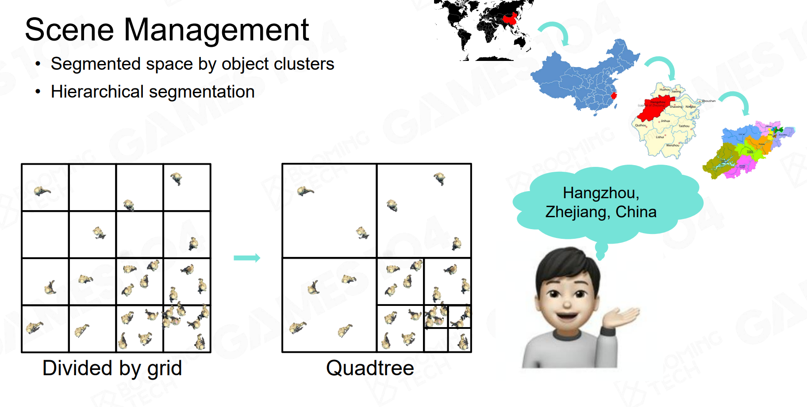
除此之外还有最常用的BVH等：
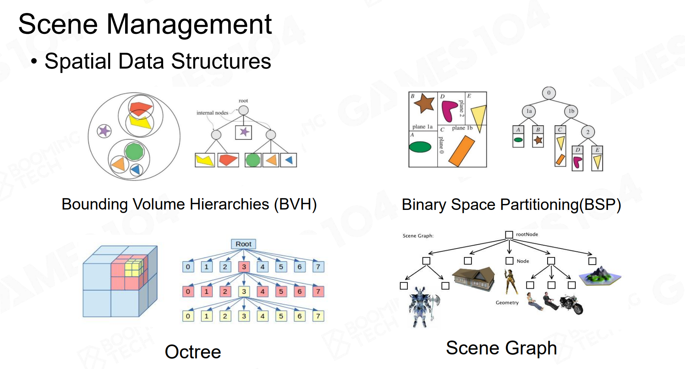
当我们需要发布炮弹爆炸的事件时，我们可以先找到我们的炮弹在哪个节点。然后寻找周报的时候，事实上就只需要向上、向下或者遍历兄弟节点即可。
本节课Takeaways
- 在游戏世界中，每一个物体都是所谓的Game Object（GO）。
- 可以使用组件化的方式来描述GO。
- GO的状态通过Tick更新。
- GO之间使用事件机制交互。
- GO的管理可以通过很多高效的方式。
时序一致性问题
假设我们的场景有一个人，但是这个人在某个时刻上了车。那么车和人之间的Tick时序就需要有所保证。
一般要求父GO先Tick。例如车说这一帧它移动了30厘米，那么这个位置更新之后，作为子GO的人才能在当前Tick帧知道，自己的父对象位置更新了，自己的位置也应该更新。如果先更新人，人不动，然后更新车，车动了30厘米，那么人就会被甩在原地。
但是这样的Tick时序，当通过Component-based的方式来实现时会变得很他妈的复杂。事实上很多Tick是分散到多CPU并行执行的。
这里课程又举了个很神金的例子。就是你和你女朋友（你有女朋友吗？嘻嘻嘻，反正我没有，焯！）在同一帧要给对方写分手信，那么到底是谁甩了谁呢？
如果让游戏对象直接彼此写信时，会产生逻辑上的混乱性。例如我们要实现一个回放系统，它的原理就是记录我们玩家之前的操作输入，然后重新播放一遍游戏流程。我们希望相同输入能够得到相同的结果，那么就需要保证时序的一致性。但是如果引入了上面多线程的运行机制，那么结果可能就不一样。例如线程一是男方处理分手信，线程二是女方处理分手信。假设游戏中线程一男方先处理了，这时候游戏认为男方甩了女方，给男方加分。但如果回放时由于多线程的不确定性，线程二的女方先处理，导致女方得到分数，那么就会得到不同的结果。
因此课程里提到了一个“邮局”的概念，我认为就是一个关键的第三方，用于保证事件处理的时序性的机制。
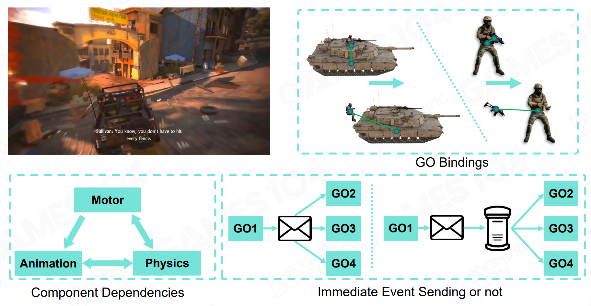
因此现代游戏引擎中有 PreTick 和 PostTick 的概念，它就是用于解决这种持续性问题。
当然还有所谓的循环时序问题。例如我的移动组件说我的速度变成了50cm/s，这时候动画系统的状态变成了跑步，那么我Tick我的动画。这时候可能我的脚会迈出去很多，可能会触发物理碰撞。而这个物理碰撞又反过来影响我的位置。所以在真实的游戏引擎开发的时候，会经常遇到它们彼此之间好像有那么一点点循环依赖。大家看到很多游戏如果写得不够好的时候，会经常发现它有大概一帧到两帧的延迟，这种延迟很多时候就是因为时序问题导致的。